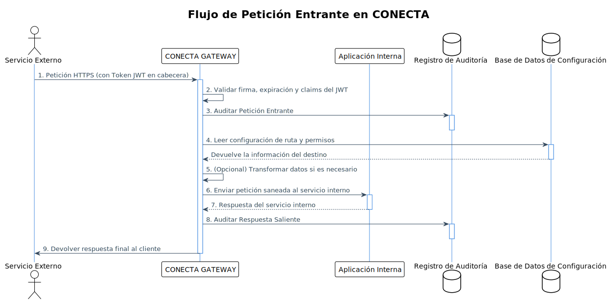

Arquitectura del Sistema CONECTA API Gateway
1. Enfoque de Implementación
Para el desarrollo del sistema CONECTA API Gateway, analizaremos las áreas complejas de los requisitos y seleccionaremos las tecnologías adecuadas para su implementación.
1.1 Análisis de Puntos Difíciles
-
Enrutamiento Dinámico: Debe ser configurable sin reinicio y manejar reglas complejas.
-
Seguridad JWT: Manejo eficiente de validación y generación de tokens.
-
Transaccionalidad: Garantizar la integridad en un entorno distribuido.
-
Alta Disponibilidad: Asegurar operación continua y resistencia a fallos.
-
Almacenamiento de Auditoría: Gestionar grandes volúmenes de datos de auditoría de manera eficiente.
-
Escalabilidad: Soportar alto volumen de peticiones concurrentes.
1.2 Selección de Frameworks
Backend (Spring Boot)
-
Spring Cloud Gateway: Proporciona capacidades avanzadas de enrutamiento, predicados y filtros.
-
Spring Security: Para la autenticación y autorización mediante JWT.
-
Spring Data JPA: Para la persistencia de datos de configuración y auditoría.
-
Spring Boot Actuator: Para monitorización y métricas.
-
Resilience4j: Para implementar patrones como Circuit Breaker y Rate Limiting.
-
Micrometer: Para captura y exposición de métricas.
-
Flyway: Para gestión de versiones de la base de datos.
Frontend (Angular 18)
-
NgRx: Para gestión de estado en aplicaciones Angular.
-
Angular Material: Componentes UI prediseñados.
-
ng2-charts: Para visualización de datos y métricas.
-
NgxDatatables: Para visualización tabulada de datos de auditoría.
-
RxJS: Programación reactiva para manejo de flujos asincrónicos.
Herramientas Adicionales
-
ElasticSearch: Para almacenamiento y búsqueda eficiente de logs de auditoría.
-
Redis: Como caché distribuida para alto rendimiento.
-
Kafka: Para procesamiento de eventos de auditoría de manera asíncrona.
-
Docker & Kubernetes: Para contenerización y orquestación.
-
Prometheus & Grafana: Monitorización y alertas.
2. Arquitectura del Sistema
2.1 Visión General de Componentes
+---------------------+ +------------------+ +--------------------+
| | | | | |
| Sistemas Externos |<--->| IBM DataPower |<--->| CONECTA Gateway |
| | | | | |
+---------------------+ +------------------+ +------+-------------+
|
v
+---------------------+ +------------------+ +--------------------+
| | | | | |
| Auditoría/Monitoreo |<--->| Configuración y |<--->| Servicios Internos |
| | | Administración | | |
+---------------------+ +------------------+ +--------------------+
2.2 Arquitectura de Componentes
La arquitectura de CONECTA se basa en un diseño modular con varios componentes independientes que trabajan en conjunto:
2.2.1 Core Gateway (Spring Cloud Gateway)
-
Router Engine: Maneja el enrutamiento de peticiones basado en reglas.
-
Security Filter: Implementa validación y generación de JWT.
-
Transaction Manager: Asegura la integridad de las operaciones.
-
Circuit Breaker: Previene cascadas de fallos.
2.2.2 Sistema de Configuración
-
Config Repository: Almacena configuraciones de rutas, seguridad, etc.
-
Dynamic Config Manager: Permite cambios en caliente sin reinicio.
2.2.3 Sistema de Auditoría
-
Audit Logger: Captura datos de auditoría.
-
Audit Repository: Almacena logs para consulta.
-
Audit Search Engine: Permite búsquedas avanzadas.
2.2.4 Componente de Administración
-
Admin API: APIs RESTful para gestión.
-
Admin UI: Interfaz Angular para administradores.
2.2.5 Sistema de Monitoreo
-
Metric Collector: Recopila métricas de rendimiento.
-
Health Check: Verifica estado del sistema.
-
Alert Manager: Gestiona notificaciones.
3. Modelo de Datos y Interfaces
3.1 Diagrama de Clases
A continuación se presenta el modelo de datos principal y las interfaces del sistema:

esto es una prueba